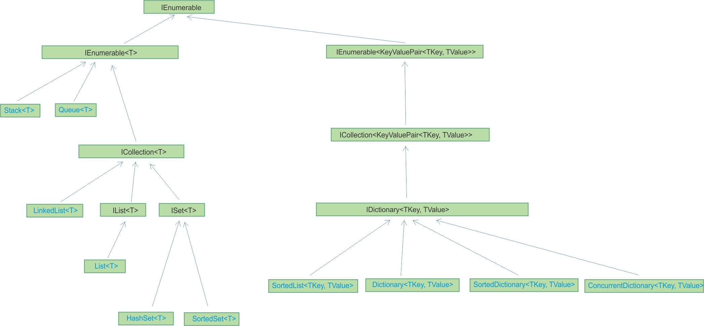

План занятия:
- Коллекции
- Виды коллекций
- Интерфейсы IEnumerable и IEnumerator
- Универсальные шаблоны
- Итераторы
Коллекции
Во многих приложениях требуется создавать группы связанных объектов и управлять ими. Существует два способа группировки объектов: создать массив объектов и создать коллекцию.
Коллекции предоставляют более гибкий способ работы с группами объектов. В отличие от массивов, коллекция, с которой вы работаете, может расти или уменьшаться динамически при необходимости. Некоторые коллекции допускают назначение ключа любому объекту, который добавляется в коллекцию, чтобы в дальнейшем можно было быстро извлечь связанный с ключом объект из коллекции.
Примечание: Для работы с коллекиями подключите директивы using для пространств имен System.Collections.Generic и System.Linq.
Виды коллекций

Многие типовые коллекции предоставляются платформой .NET. Каждый тип коллекции предназначен для определенной цели.
- Классы System.Collections
- Классы System.Collections.Generic
- Классы System.Collections.Concurrent
Интерфейсы IEnumerable и IEnumerator
Основной для большинства коллекций является реализация интерфейсов IEnumerable и IEnumerator. Благодаря такой реализации мы можем перебирать объекты в цикле foreach.
foreach(var item in перечислимый_объект)
{
}
Интерфейс IEnumerable имеет метод, возвращающий ссылку на другой интерфейс - перечислитель.
public interface IEnumerable
{
IEnumerator GetEnumerator();
}
Интерфейс IEnumerator определяет функционал для перебора внутренних объектов в контейнере.
public interface IEnumerator
{
bool MoveNext(); // перемещение на одну позицию вперед в контейнере элементов
object Current {get;} // текущий элемент в контейнере
void Reset(); // перемещение в начало контейнера
}
Универсальные шаблоны
Универсальные шаблоны позволяют точно настроить метод, класс, структуру или интерфейс в соответствии с типом обрабатываемых данных. Например, вместо использования класса Hashtable , который позволяет ключам и значениям быть любого типа, можно использовать универсальный класс Dictionary<TKey,TValue> и указать допустимый тип ключа и тип значения. Помимо прочего, преимуществами универсальных шаблонов являются улучшенная возможность многократного использования кода и сохранения типов.
Универсальными шаблонами являются классы, структуры, интерфейсы и методы, которые имеют прототипы (параметры типов) для одного или нескольких типов, которые они хранят или используют. Класс универсальной коллекции может использовать параметр типа в качестве заполнителя для типа объектов, которые в нем хранятся. Параметры типа отображаются как типы его полей и типы параметров его методов. Универсальный метод может использовать параметр типа в качестве типа возвращаемого значения или как тип одного из своих формальных параметров. Следующий код иллюстрирует определение простого универсального класса.
foreach
Коллекции реализующие интерфейс IEnumerable/IEnumerable<T> поддерживают перебор в цикле foreach.
Итераторы
Итератор можно использовать для прохода по коллекции, такой как список или массив.
Метод итератора или метод доступа get выполняет настраиваемую итерацию по коллекции. Метод итератора
использует оператор yield return для поочередного возврата каждого элемента. При достижении
инструкции yield return текущее расположение в коде запоминается. При следующем вызове функции
итератора выполнение возобновляется с этого места.
Итератор используется из клиентского кода с помощью оператора foreach или с помощью запроса LINQ.
Типом возвращаемого метода итератора или метода доступа get может быть IEnumerable, IEnumerable<T>, IEnumerator или IEnumerator<T>.
public static System.Collections.Generic.IEnumerable
EvenSequence(int firstNumber, int lastNumber)
{
// Вернуть все четные значения в промежутке.
for (int number = firstNumber; number >= lastNumber; number++)
{
if (number % 2 == 0)
{
yield return number;
}
}
}